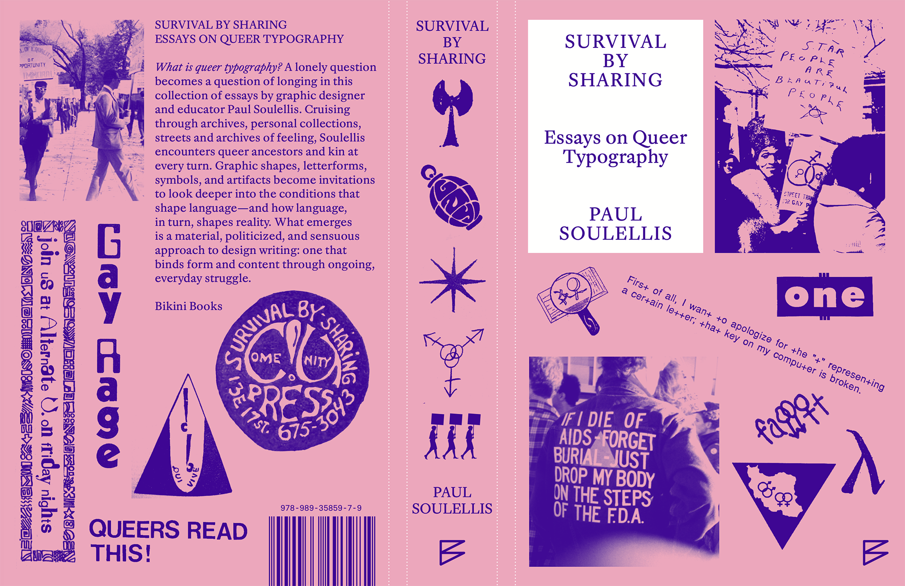

Survival by Sharing: Essays on Queer Typography (2027)

Survival by Sharing: Essays on Queer Typography is a new book by Paul Soulellis, forthcoming from Bikini Books in April 2027.
I started a Substack a few years ago because I wanted a place to experiment with new writing about queer approaches to design and typography. Readers got an occasional post from me, maybe once a month, at most. I didn’t always know what to do with the ideas that emerged there, or what they meant, so I just tried to prioritize the spaciousness and access that the platform allowed—a way of working in public, as I’ve always tried to do in my practice.
In January 2025, I met up with Nina Paim, the editor-publisher of Bikini Books, and a few weeks later, I signed a contract with her to publish a 50,000-word book about queer design and typography. Almost immediately, we began working on those Substack posts, transforming some of them into book chapters. We had countless Zoom meetings, talked on the phone, sent text messages, and left endless comments for each other in Google docs (we’re still doing this!). In March, we met for a week in her office in Porto, Portugal, and then again in June, in New York City. I rewrote those essays, and rewrote them again, and again, and then wrote new ones. And re-wrote those. Nina and I sequenced them, chopped, shaped, and questioned everything, and did it all over again. And while all of this was happening, the research never stopped—every archive visit, every conversation, every new connection became an opportunity to re-think something, and continue the transformation. Eventually, Nina started telling me: “Save that for your next book,” and I began to see some closure on the horizon.
Energy and enthusiasm for the project—from Nina and others—kept me going, especially at moments when I wasn’t sure I wanted to continue. My writing changed, too. I began to put more and more of myself into the work. I was encouraged to shift my academic approach to writing and think more creatively, more affectively, about storytelling. The safety of academic rigor was something I kept tripping over—to provide resolution, to state my thesis clearly, to solve the problem, as though I needed to prove something (the ideas? myself?). Ugh, such a designerly way to think and make! It’s my default way to work. But queerness isn’t like that, and writing about the shape of queer language required something else. As I wrote the introduction to the book, I returned to Eve Kosofsky Sedgwick, who helped me with my own understanding of queerness. In “Queer and Now” (1993), she writes: “That’s one of the things that ‘queer’ can refer to: the open mesh of possibilities, gaps, overlaps, dissonances and resonances, lapses and excesses of meaning . . . ” I tried to stay with that openness throughout the project, even when it would have been easier not to; this book gave me an opportunity to dwell more intentionally in the then and there, in the open mesh of possibilities. Instead of resolving, I tried to make space for resonance. Instead of drawing conclusions, I tried to shape a place for lingering.
Countless revisions later, I delivered the manuscript to Caren Litherland, who’s now bringing her editorial craft, care, and expertise to the project. While she edits the 11-chapter manuscript and brings it into its final, ready-to-read state, Nina, Sera van der Water, and I are working on image rights and permissions. John Philip Sage and Carlos Romo-Melgar (spreeeng) are designing the book, which will be printed in Portugal in March 2027. I’m sharing their sketch for the cover above, which features images and iconic moments from the project. The entire book will be set in a special version of Robin Mientjes’ Dover Serif Text, including a set of queer glyphs and ligatures that she’s working on right now. Avram Finkelstein, the artist, writer, and activist whose life’s work dedicated to art and resistance has been ever-inspiring to me, will write the foreword. I’m so grateful for this incredible team helping me bring this book to life.
Survival by Sharing: Essays on Queer Typography
What is queer typography? A lonely question becomes a question of longing in this collection of essays by graphic designer and educator Paul Soulellis. Cruising through archives, personal collections, streets, and archives of feeling, Soulellis encounters queer ancestors and kin at every turn. Graphic shapes, letterforms, symbols, and artifacts become invitations to look deeper into the conditions that shape language—and how language, in turn, shapes reality. What emerges is a material, politicized, and sensuous approach to design writing: one that binds form and content through ongoing, everyday struggle.
- Type: softcover book
- Dimensions: 13 cm x 20 cm
- Pages: 304
- Word count: 50,000
- Language: English
- Images: 200+
- Printing: Offset lithography
- Binding: sewn and glued
- Publisher: Bikini Books
- Release date: April 2027
- Edition: 3,500
Pre-sales through Bikini begin in February 2027, and the book will be available for shipping in April. Worldwide distribution will be through Idea Books.